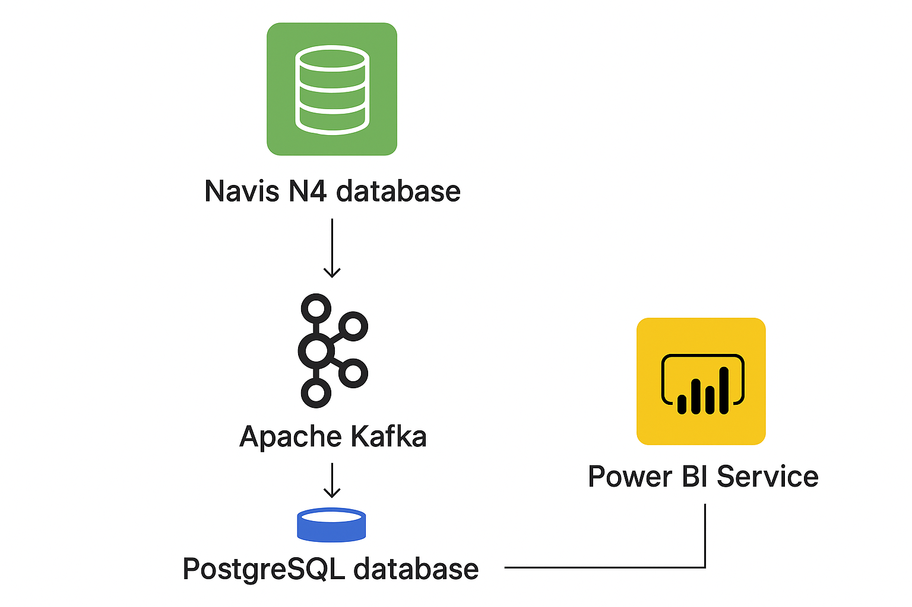
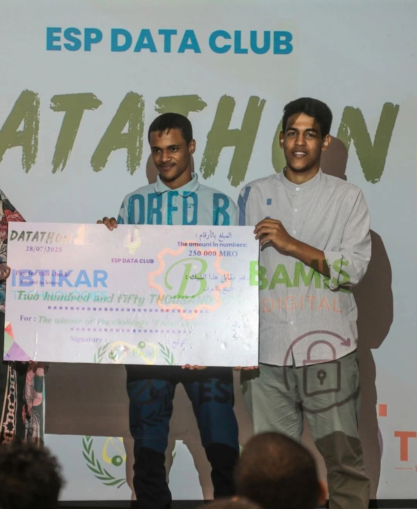
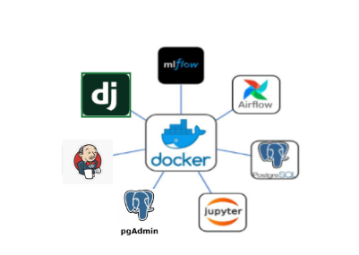
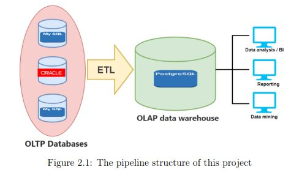
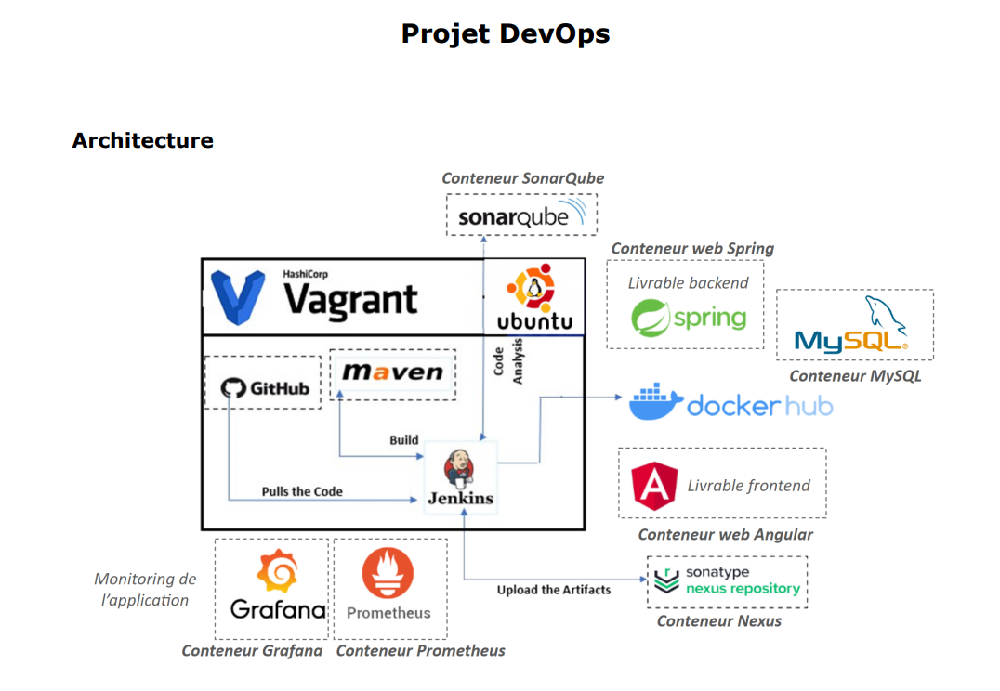

Data Streaming TCN
This project implements real-time data streaming from the Navis N4 database using Apache Kafka (producer and consumer). The streamed data is stored in a PostgreSQL database, which can then be connected to Power BI Service for analytics and reporting. This solution removes the need to purchase the expensive Navis–Power BI integration license.
First Place – ESP Datathon : Fraud Detection
This project tackled a critical challenge: transactional fraud detection. Several unsupervised ML models were implemented including Isolation Forest, Local Outlier Factor (LOF), and a Deep Learning Autoencoder.
Terminal à conteneurs de Nouakchott (TCN) – 6-month Internship
Developed a web application for automated maintenance management using Django, PostgreSQL, and Docker:
- Centralization of real-time intervention reports with multi-role authentication (23 profiles)
- Dynamic forms tailored to sections (Crane, Workshop, Facility)
- Interactive KPI dashboards using Bokeh
- Automated email reminders
- AI layer for predictive maintenance (ML models, MLflow, Airflow) deployed via Jenkins CI/CD
Computer Vision Challenge
Collected and scraped over 2,000 images of Mauritanian license plates. Developed an AI-based deep learning system for accurate license plate recognition (RIM-AI).
BNM_Data_Warehouse: ETL Process for Data Centralization
ETL process developed for Banque Nationale de Mauritanie to centralize and organize data from multiple sources, providing a strong foundation for data analysis.
CI/CD Pipeline for Spring/Angular Application
Automation of complete CI/CD pipeline: build, testing, deployment, and monitoring. Tools: Git, Jenkins, Maven, JUnit, Nexus, SonarQube, Docker, Prometheus, Grafana.
Resume2portfolio

cv2portfolio is a web application that transforms your resume into a personalized and interactive portfolio website. By uploading your resume, the system automatically generates a complete portfolio using HTML, CSS, and JavaScript, ready for customization and deployment. You can easily host your generated portfolio on our GitHub Pages or on a premium server with just a few clicks.
Analysis of Educational Inequalities and Illiteracy
Analysis of Educational Inequalities and Illiteracy in Mauritania and creation of a logistic regression predictive model to assess illiteracy status based on characteristics such as gender, age, etc.
Conversion Rate Challenge
Development of a predictive conversion rate model and marketing recommendations to optimize revenue.
Intelligent Agriculture Platform
Integrated platform: crop recommendation, forecasting, pest control, real-time weather data. AI + IoT technologies for optimal yields.
Age and Sex Prediction from Vocal Data using LSTM
LSTM-based deep learning model to predict age and sex from vocal data.
Uber_Hotspot_ML
Uber_Hotspot_ML is a machine learning project that detects Uber ride hotspots in New York City. It uses DBSCAN and KMeans clustering to identify dense zones of trips and visualize them on an interactive map. The project helps understand where and when drivers should position themselves to reduce waiting time and optimize ride availability.
Predicting-Employee-Attrition-Rates-in-Organizations
This project uses machine learning to predict employee attrition in organizations. By analyzing employee demographics, performance, compensation, and work-life balance, the models help identify employees likely to leave, enabling better HR decision-making.
Dhamet Application
Development of a Traditional Game using the Python programming language.